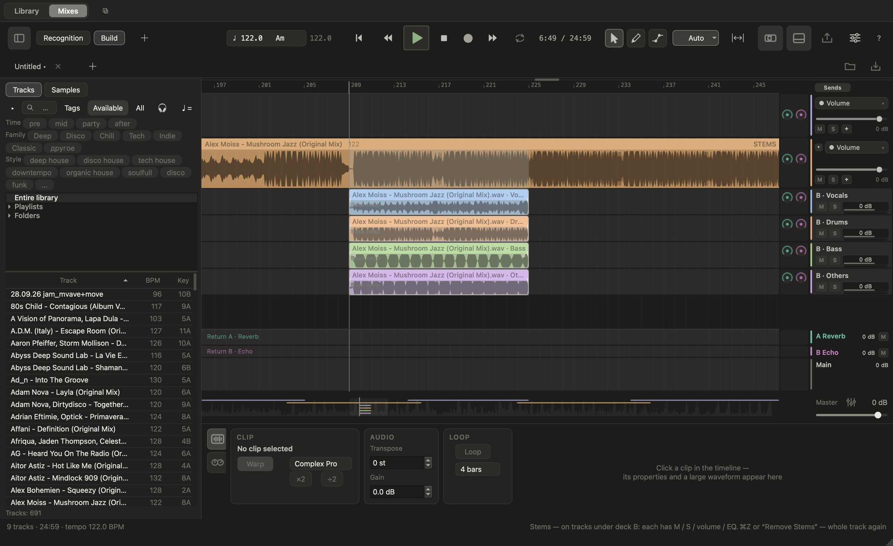
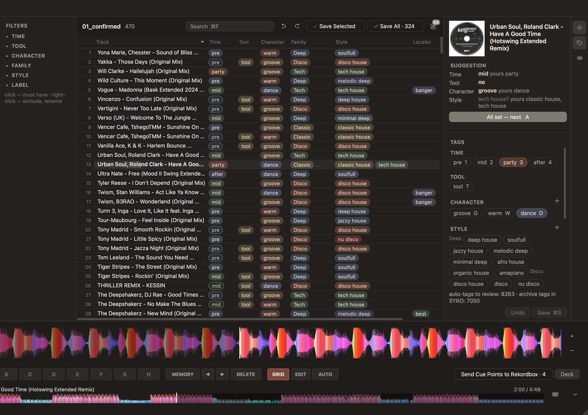
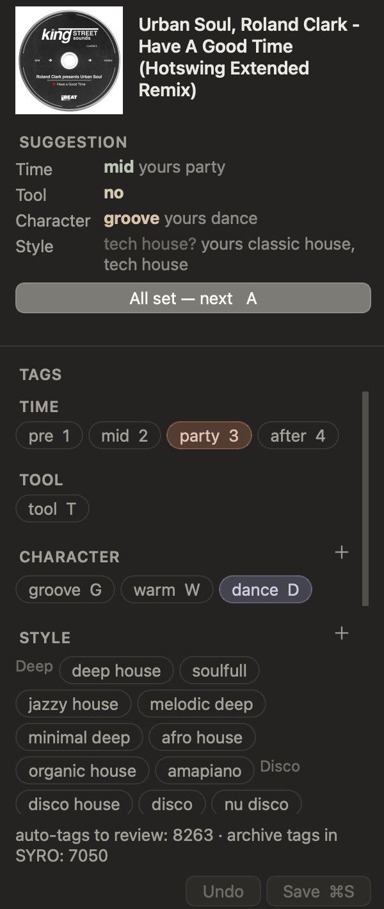
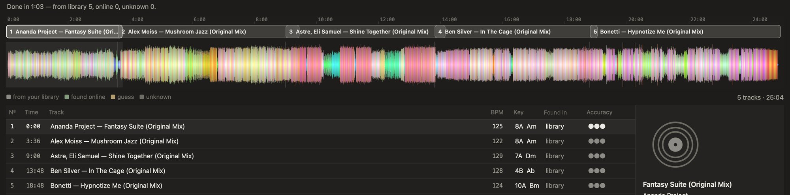
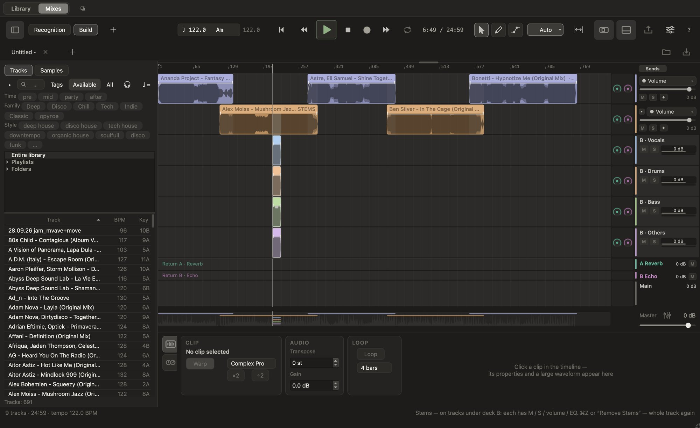
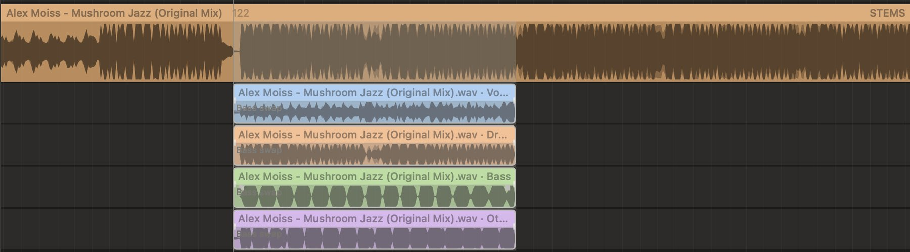
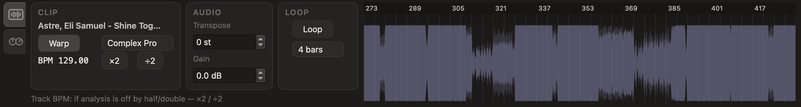
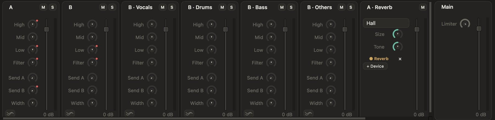
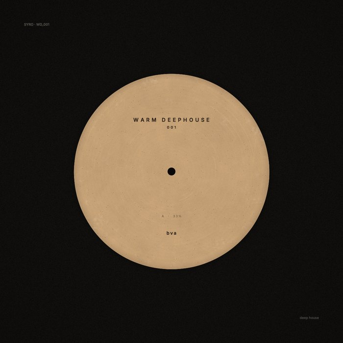

SYRO слушает вашу библиотеку и ставит теги так, как ставите вы, превращает записанные миксы в треклисты — и собирает новые миксы, как в вашей DAW, только для диджеев.

Нейросеть слушает каждый трек и подсказывает теги: время сета, стиль, характер. Разметьте около 40 треков, которые SYRO выберет сама, — дальше она тегирует в вашей логике. Умеет брать теги и из названий папок.


SYRO читает и пишет вашу библиотеку Rekordbox 6 или 7 напрямую — My Tags, точки и плейлисты. Перед каждой записью делает резервную копию базы Rekordbox и возвращает её, если что-то пошло не так.
Ваши теги и точки
Библиотека на этом Mac

Откройте запись микса — SYRO найдёт каждый трек: время, BPM, тональность и волну всего сета. Сначала ищет в вашей библиотеке без интернета, потом — онлайн-сервисами. Изменённый темп и тональность не мешают.
Настоящий микс bva, распознан по библиотеке на Mac с чипом M.
У каждого найденного трека — ссылки «слушать / купить».
Выберите 5–10 треков и нажмите «Выгрузить автоматически»: они сцепятся хвостами с умными переходами, по темпу и тональности. Поправьте что хотите — и экспорт.
Трек встаёт ровно туда, куда бросили. Клипы на дорожках, Warp, Loop и фейды — свободно, как в вашей DAW.

Вокал, ударные, бас и остальное — каждый на своей дорожке с M, S, громкостью и EQ. «Быстро» — секунды, «Качество» — собственный алгоритм SYRO из четырёх моделей. Можно разделить весь трек или только кусок.

Варп-маркеры, Set 1.1.1, темп ×2 / ÷2, Transpose, Gain, Loop — и «Свести бочки»: SYRO слушает долю и сама выравнивает входящий трек.

Кривые для любой ручки, несколько полос на деку, запись автоматизации кнопкой ●, готовые формы и кривая темпа всего микса.
Браузер сэмплов, встроенные FX в темпе микса, а кусок клипа, утянутый в сторону, сам становится сэмплом.
Любое действие отменяется. Горячие клавиши как в DAW — в любой раскладке, вкладки миксов, автосохранение.
Полоса на каждую деку и каждый стем — как на диджейском пульте: ручки с нулём посередине, Send слева направо, фейдер и индикатор уровня на каждой полосе.

От последнего перехода до публичной ссылки — не выходя из SYRO.
Целевая громкость в LUFS и потолок true peak. Экспорт всего микса, по декам или только выделенного — с треклистом .cue.
Обложка-виниловый лейбл с названием и номером микса. Пять цветов, новый вариант одной кнопкой, PNG 3000×3000.

Заливка на SoundCloud и Mixcloud прямо из SYRO — файл, треклист, теги и обложка вместе.
А ещё плейлист в Spotify из треков микса (нужен Spotify Premium) и «Микс в Rekordbox» — сет плейлистом с точками переходов.
Теги, стемы и распознавание по библиотеке работают на вашем Mac. Интернет нужен один раз — скачать модели при установке (с ползунком), а дальше только для онлайн-распознавания и публикации, когда вы сами их запускаете.
Тегирует вашу диджейскую библиотеку по звуку и синхронизирует её с Rekordbox, превращает записанные миксы в треклисты и собирает новые миксы — со стемами, переходами, мастерингом, обложкой и публикацией.
Один раз — скачать модели при установке. Дальше SYRO работает без интернета; онлайн-распознавание и публикация выходят в сеть, только когда вы их запускаете.
Нет. Файлы анализируются на вашем Mac и никуда не загружаются — кроме микса, который вы сами решили опубликовать.
Нет — SYRO работает вместе с ним: готовит библиотеку, точки и плейлисты, а играете вы по-прежнему в Rekordbox.
SYRO в закрытой бете. Оставьте почту — пришлём приглашение. Или напишите на syrodj.studio@gmail.com.
Приглашения в бету отправляем небольшими группами. Одно письмо, когда подойдёт ваша очередь, — и больше ничего.